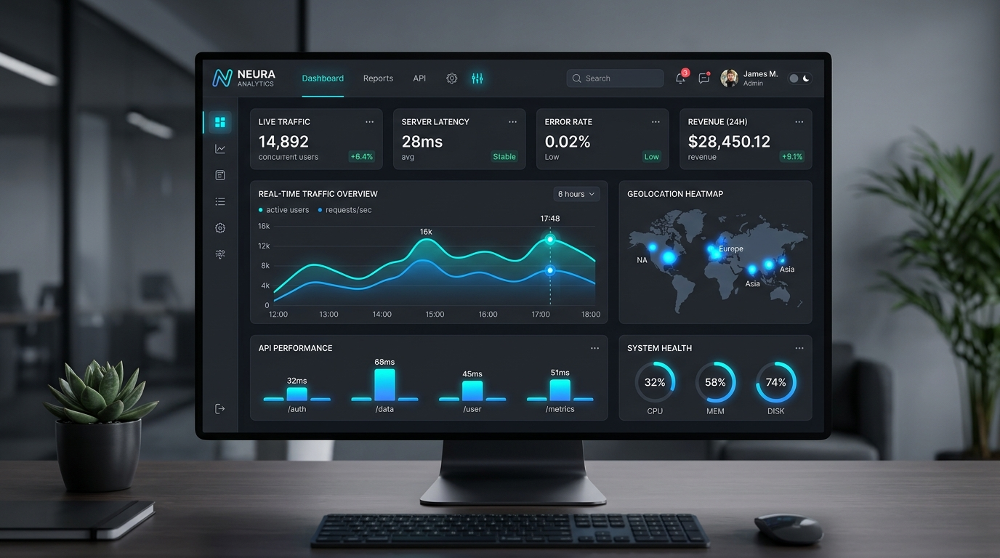

PulseFlow — 대용량 시계열 실시간 모니터링 허브
초당 2,000건 이상의 서버 지표와 트래픽 이벤트를 지연 없이 수집하여 시각화하는 B2B 실시간 대시보드 플랫폼입니다.
- Web Worker를 통한 데이터 파싱 연산 분리로 메인 UI 스레드 60fps 보장 (Frame Drop 0건)
- HTML5 Canvas 기반 가상화 차트 렌더러를 자체 제작하여 50,000개 데이터 포인트 렌더링 시간 72% 단축
- WebSocket 지수 백오프(Exponential Backoff) 재연결 및 인메모리 버퍼링으로 네트워크 단절 복원력 확보
TypeScript
React
Canvas API
Web Worker
FastAPI
WebSocket
Redis